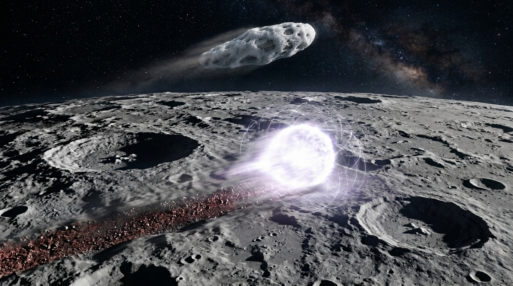
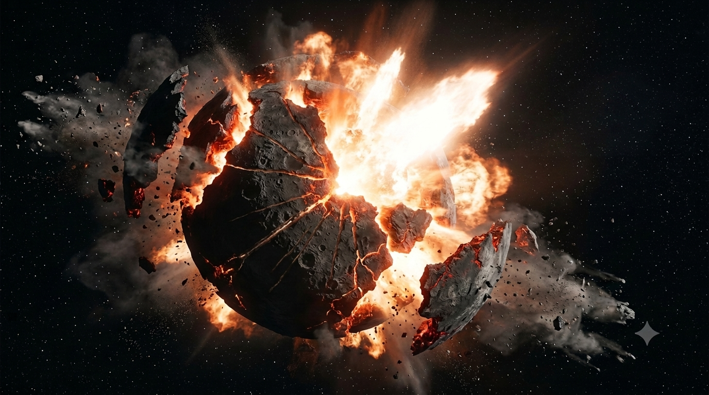
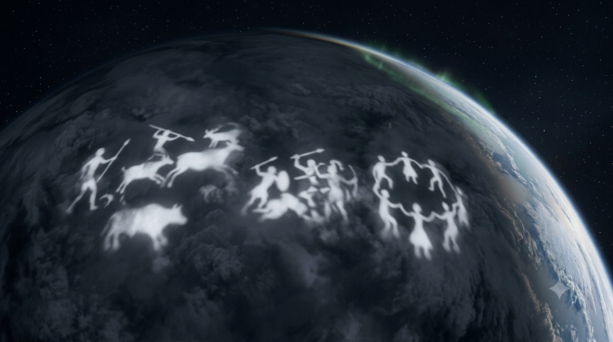
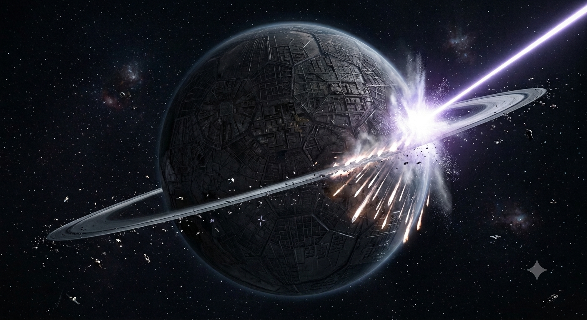
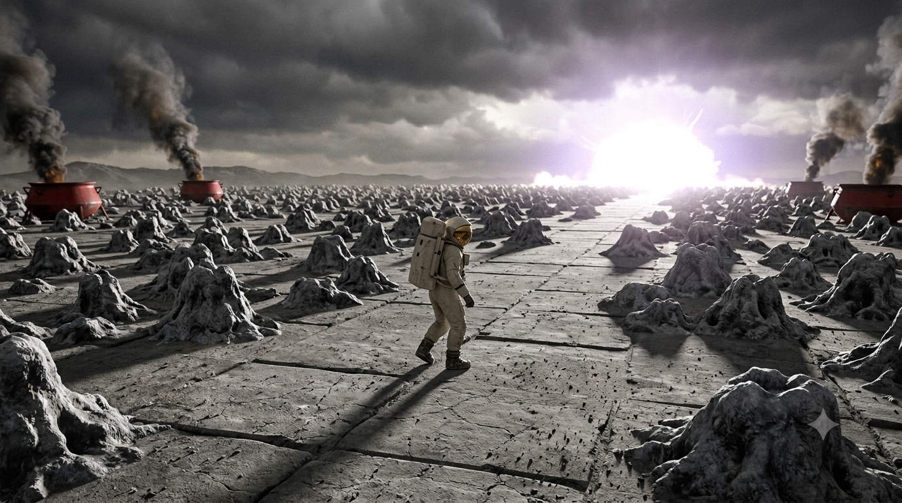

Eighteen actions and reactions between the crew of the Hermes and the planet Quinta, from covert arrival to the death of the envoy — after Stanisław Lem's novel Fiasco (1986). Each step was reasonable on its own terms, and irreversible in combination.
Gigawatt transmitters flood every radio band with chaos.
Hundreds of gigawatt transmitters flood every radio band with chaos — scrambling, hidden code, or intentional noise, no one can say. DEUS shows it is not pure chaos but opposing emissions: transmitters jamming and phase-cancelling each other. Conventional radio contact is foreclosed before it begins.
Two Quintan craft, the "moth" and "cigar", seized and dissected.
The crew captures two derelict Quintan spacecraft: a century-old, 200-ton satellite ("the moth," armored like a turtle) and a fresh 5-ton radar-absorbing "cigar" with a melted combat wound. Dissection reveals silico-amino acids — a "technobiology" halfway between machine and tissue, evidence of necroevolution: weapons speciating like organisms. The fresh damage means the war is ongoing.
Hermes, disguised as a comet, lands on Quinta's moon.
Disguised as a comet in a foam cocoon, the Hermes lands reconnaissance on Quinta's moon, tracking the "plasma flame" — a nuclear fireball racing between craters, caged in a monstrous magnetic field. It finds a massive underground energy installation, hurriedly abandoned and sabotaged. The Captain concludes that studying wreckage is futile and decides to ask openly for dialogue.
Five probes sent to reconnoiter Quinta's moon.
Five probes reconnoiter the moon. Two vanish at periselenium; three are attacked by small Quintan interceptors, escape into a self-made sodium fireball, and then deliberately atomize themselves by head-on collision so nothing can be captured. Their fate convinces the Captain that "gifts of greeting" would never reach the surface.

Ambassador beams laser greetings at Quinta for three weeks.
The orbiter Ambassador beams laser greetings, logic primers, and reply instructions at Quinta for three weeks, in every modulation and wavelength. The answer is silence. The visual survey reveals a world "intentionally dead": metropolis-sized structures with no night lights, transport lines with nothing moving on them, "forests" that are engineered light-traps.
Unmanned lander announced 48 hours ahead; four chase craft converge.
The Captain announces, 48 hours ahead, the landing of an unmanned, unarmed emissary on Heparia. The lander is forced off course, and four Quintan chase craft converge on mathematically perfect trajectories. Rather than allow capture, its computer shorts the teratron engine: a sidereal implosion swallows the pursuers. The olive branch has killed — the mission's first deaths.
Catalytic erosion agents begin eating the hull.
Moving sunward to recharge, the Hermes is infected by a cloud of viroids — catalytic erosion agents eating the hull. The Captain "roasts" the ship clean in a solar prominence. Attack, minefield, or drifting war-garbage: the crew cannot decide. The war-sphere theory is born — Quinta's arms race escalated into space and became an autonomous, machine-run conflict.
The moon will be shattered; assurances plus deadline.
The council votes, over Monk's objections, to shatter Quinta's moon as a harmless, unanswerable demonstration. A warning is broadcast — the moon will be shattered, no harm will follow, and a deadline is set: the first ultimatum. No signal comes back.
Eighteen warheads gasify the moon's core.
Eighteen warheads strike the moon, tunneling to its core and turning it to gas — a plan to split it so precisely that every fragment stays in orbit. But night-launched Quintan rockets ambush three warheads, and the cavitation goes eccentric. The moon breaks apart; trillions of tons of debris fall onto Quinta, devastating Norstralia's coasts.

Magnetron units image the crust; rockets rise against them.
Guarded magnetron units image the crust layer by layer, revealing subterranean networks and calcium foci — millions of skeletons at Medusa. This is hope: beings still live below; the Captain argues the Quintans pulled the debris onto themselves. Rockets launched twice at the instruments are destroyed, exposing over a thousand hidden launchers.
Wordless picture-story projected onto every continent's clouds for three days.
Monk shames the Captain out of firing the newly built solaser as a weapon, recasting it as a child's pocket mirror. Pilot proposes a wordless picture-story — composed by DEUS around hunting, battle, and a closing dance — projected onto every continent's clouds for three days, gambling that any technological civilization was once a cave-painting one.

Binary-coded solar flashes offer landing at a "neutral" spaceport.
Quinta answers at last: binary-coded solar flashes from hectare-sized surface mirrors invite a landing at a designated "neutral" spaceport, safety guaranteed, arrival time to be signaled by neodymium laser. The Captain reasons that no truly neutral power can exist inside a century-long cosmic war — a trap is suspected.
Dispatched to test the invitation; returned with ash-flowers, accusatory cartoons, formal acceptance.
Before risking anything larger, the Captain dispatches two automated landers to test the invitation. They return bearing Quintan visual messages: crystalline flowers that bloom and turn to ash, accusatory cartoons blaming the Hermes for the selenoclasm, and formal acceptance of the landing. The crew cannot tell whether the friendliness is honest or a trick.
A mock Hermes lands; the real ship hides behind Sexta.
A hollow, perfect mock-up of the Hermes — its arrival announced by neodymium laser — lands at the spaceport while the real ship hides behind Sexta, watching through microscopic "bee's eyes." Four seconds after its drive shuts off, it is destroyed by a strike calibrated to kill passengers but preserve the hull for capture and study.
Six minutes of solaser fire, then a seventy-hour ultimatum.
Monk pleads for retreat and names the ending aloud: fiasco. The Captain instead fires the solaser for six minutes at the ice ring, prying it from equilibrium. Trillions of tons of ice fall planet-wide; millions die. The ultimatum follows: seventy hours to receive a human envoy and return him safely, or planetoclasm.

Pilot lands alone with the poisoned welcome and ritual, so misses his check-in.
At spaceport AAO35, the decoy's wreck is found virus-seeded; an inside-out Hermes replica stages an empty greeting ritual. Pilot lands alone and, tracking metabolic readings among thousands of gray-crusted mounds, misses his check-in. The Hermes executes the ultimatum — in the strike's glare, Pilot realizes the mounds are the Quintans, annihilated with him.

The images were created by generative AI (Gemini).